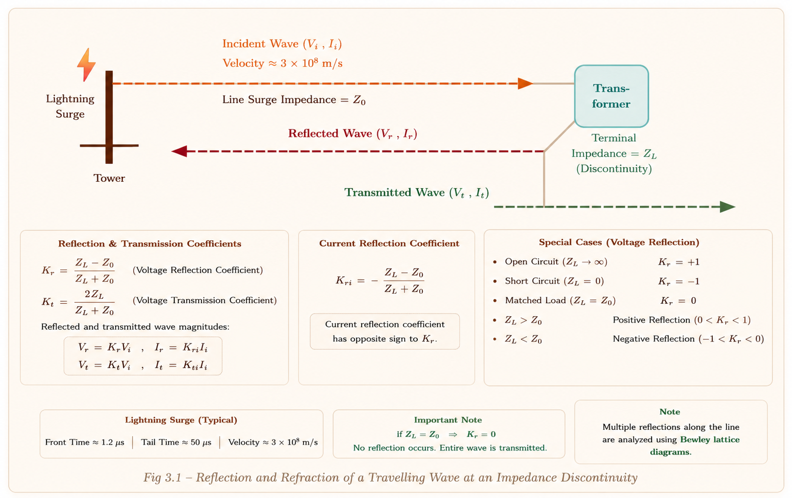
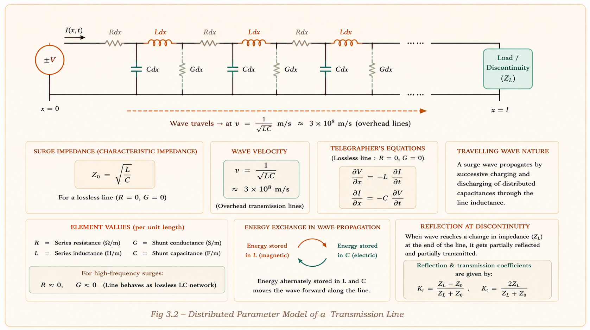
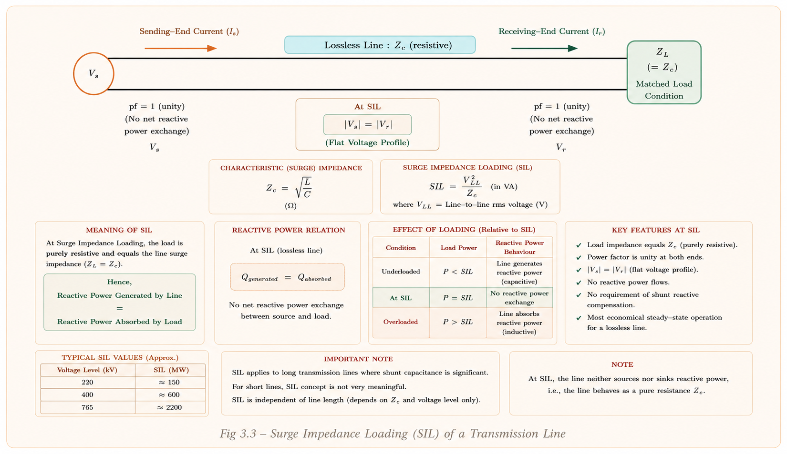
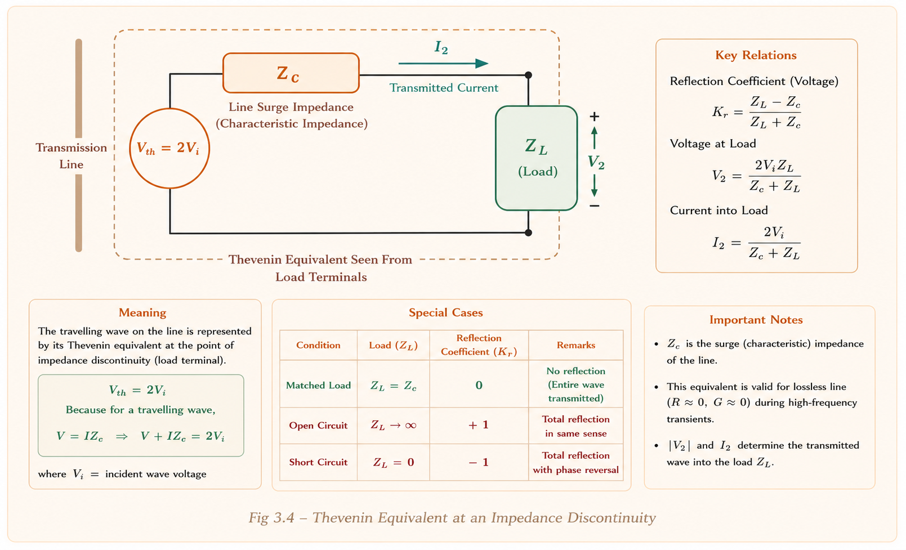
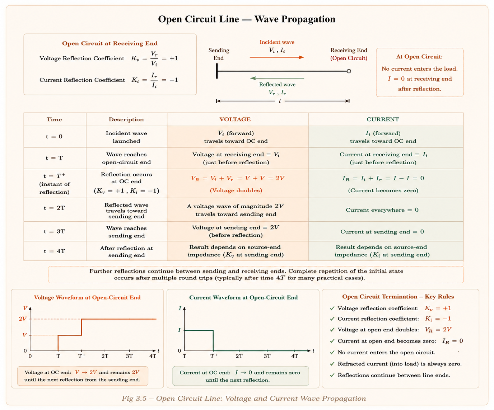
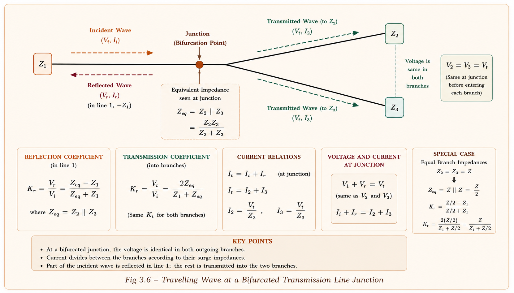

A rigorous yet intuitive study of how surge waves propagate, reflect, and refract on power transmission lines. Covers velocity, surge impedance, SIL, wave analysis, open/short circuit behaviour, and bifurcated line theory — with solved GATE & IES numericals.
When a lightning bolt strikes a transmission tower, or a circuit breaker operates suddenly, a surge wave is launched onto the power line. This wave can travel hundreds of kilometres in milliseconds, bounce off transformers, and build up dangerous voltages that destroy insulation. Understanding how these waves behave is the foundation of power system protection and insulation co-ordination.
In steady-state analysis, we model transmission lines using lumped or distributed parameters and assume sinusoidal voltages at power frequency (50 Hz). But in transient analysis, sudden disturbances such as switching operations, lightning strikes, or short circuits generate high-frequency, high-magnitude waves that propagate along the line at near-light speed. These are travelling waves (also called surges or transient waves).

Think of a transmission line as a long chain of tiny inductors and capacitors, alternating in sequence. When a surge enters at one end, it charges the first capacitor through the first inductor, then the energy flows forward to charge the next capacitor through the next inductor, and so on — like a bucket-brigade passing water down the line.
Imagine a long garden hose lying flat. You suddenly open a valve at one end. A pressure wave travels through the hose at the speed of sound in water — not at the speed you fill a bucket. Similarly, the voltage wave travels down the transmission line at near-light speed, while the electrons (current) barely move. The energy travels as a wave, not by bulk flow.

The key insight from the bucket-brigade model: at the wavefront, energy stored in inductors exactly equals energy stored in capacitors, giving us the fundamental relationship from which wave velocity and surge impedance are derived.
At the travelling wavefront, the energy being stored in the magnetic field (inductor) exactly equals the energy being stored in the electric field (capacitor). This energy balance gives us the wave velocity formula.
Consider a line with inductance per km = L and capacitance per km = C. Let the wave travel at velocity v.
Step 1 — Voltage equation (Faraday's law):
Total magnetic flux linkages up to distance \(x\) is \(\psi_x = L \cdot I \cdot x\).
Step 2 — Current equation (Gauss's law):
Total electric flux linkages up to distance \(x\) is \(\lambda_x = C \cdot V \cdot x\).
Step 3 — Multiply equations (1) and (2):
For an overhead line, the inductance and capacitance per unit length are:
When we substitute and simplify (noting that \(\ln(\text{GMD}/\text{GMR}) \approx \ln(\text{GMD}/r)\) for solid conductors), the logarithmic terms cancel:
| Line Type | εr | Velocity | Practical Value |
|---|---|---|---|
| Lossless Overhead Line (OH) | 1 (air) | \(3\times10^8\) m/s | 3×10⁵ km/s |
| Attenuated Overhead Line | ≈1 | Reduced by attenuation | 2.5–2.8×10⁵ km/s |
| Underground Cable (UG) | >1 (solid dielectric) | \(3\times10^8/\sqrt{\varepsilon_r}\) m/s | Slower than OH line |
For underground cables, \(\varepsilon_r > 1\), so \(v_{\text{cable}} < v_{\text{OH line}}\). Students often assume the cable is faster. Remember: denser medium → slower wave, just like light slowing down in glass.
The propagation constant captures how a voltage or current wave changes as it travels — both its physical displacement (phase shift) and its attenuation (reduction in magnitude).
| Symbol | Name | Unit | Physical Meaning |
|---|---|---|---|
| \(\alpha\) | Attenuation constant | Nepers/km | Decrement in V, I wave magnitude per km |
| \(\beta\) | Phase constant (quadrature component) | Radians/km | Physical displacement (phase shift) of wave per km |
The wavelength of a travelling wave on a transmission line is the distance the wave must travel to complete one full cycle (one repetition), equivalent to a phase shift of \(2\pi\) radians or 360°.
A 6000 km wavelength means that even on a 600 km line, the wave only travels 1/10th of a wavelength before reaching the end — which is why transmission lines shorter than 600 km are often treated as electrically short in steady-state but not in transient analysis.
Surge impedance is the impedance seen by the travelling wave at any point on the line. It characterises the line's response to transient waves — not to steady-state 50 Hz current.
For a lossless line, \(Z_c = \sqrt{L/C}\) is a real number — it looks like a resistor to the wave. However, it does not dissipate power. It simply controls the ratio of voltage to current in the travelling wave, just as characteristic impedance in RF coaxial cables determines signal levels.
| Line Type | Zc Range | Typical Value |
|---|---|---|
| Overhead Line (OH) | 200 – 500 Ω | 400 Ω |
| Underground Cable (UG) | 40 – 80 Ω | 40 Ω |
Underground cables have much larger capacitance per km (conductors close together, solid dielectric) and lower inductance (no magnetic field spreading into air). Since \(Z_c = \sqrt{L/C}\), a large C and small L both drive \(Z_c\) down. This is why when a wave crosses an OH–UG junction, a large portion is reflected back.
SIL is also known as characteristic impedance loading, natural loading, or ideal loading. It is the condition when the load impedance exactly matches the surge impedance of the line.

| Condition | ZL vs Zc | Reactive Power | Voltage Relation | Current Relation | δ vs βℓ | Economic Loading |
|---|---|---|---|---|---|---|
| Loading = SIL | \(Z_L = Z_c\) | Q = 0 (neither source nor sink) | \(|V_r| = |V_s|\) | \(|I_r| = |I_s|\) | \(\delta = \beta\ell\) | — |
| Loading > SIL | \(Z_L < Z_c\) | Line acts as sink of Q (inductive load) | \(|V_r| < |V_s|\) | \(|I_r| > |I_s|\) | \(\delta > \beta\ell\) | OH line |
| Loading < SIL | \(Z_L > Z_c\) | Line acts as source of Q (Ferranti effect) | \(|V_r| > |V_s|\) | \(|I_r| < |I_s|\) | \(\delta < \beta\ell\) | UG cable |
The famous Ferranti effect (receiving end voltage > sending end voltage) corresponds exactly to Loading < SIL. The lightly loaded or unloaded line generates reactive power capacitively, raising the receiving-end voltage. This is a direct application of the SIL concept — frequently tested in GATE.
Whenever a travelling wave reaches a discontinuity — any point where the medium (impedance) changes — the wave splits. Part is refracted (transmitted) forward, and part is reflected backward. The magnitudes depend solely on the impedances \(Z_c\) and \(Z_L\).
At the moment \(t = T^+\) (just after the wave reaches the end), the equivalent circuit is a Thevenin source of \(2V\) in series with \(Z_c\), connected to the load \(Z_L\).

Always remember: \(V_2 = V + V_1\) and \(I_2 = I + I_1\). The refracted (transmitted) wave is the superposition of the incident and reflected waves at the junction. This is the boundary condition at the discontinuity.
| Terminal Condition | ZL | Vrefraction | Vreflection | Irefraction | Ireflection |
|---|---|---|---|---|---|
| Open Circuit | \(\infty\) | 2 (doubles!) | +1 | 0 | −1 |
| Short Circuit | 0 | 0 | −1 | 2 (doubles!) | +1 |
| Matched Load | \(Z_c\) | 1 (no reflection) | 0 | 1 (no reflection) | 0 |
| \(Z_L < Z_c\) | < Zc | < 1 | −ve (inverted) | > 1 | +ve |
At an open-circuit terminal, the reflected voltage coefficient is +1, meaning the voltage wave reflects with the same sign and doubles to \(2V\). This is why transformer windings connected to open-ended cables are at risk — lightning surges can appear at twice their incident magnitude. Surge arresters protect against this doubling effect.
A step voltage wave \(V\) is injected at the sending end at \(t = 0\). The time for one propagation \(T = \text{length}/\text{velocity}\). We track voltage and current at each time instant.

In a short circuit line, it is the current that doubles at the receiving end (not voltage). Voltage at the receiving end is always zero (short circuit constraint). The current increases by \(I\) at each propagation, reaching \(4I\) after 4 propagations before the cycle repeats.
| Property | Open Circuit End | Short Circuit End |
|---|---|---|
| Refracted voltage | 2V (doubles) | 0 (zero) |
| Voltage reflection coeff. | +1 | −1 |
| Refracted current | 0 (zero) | 2I (doubles) |
| Current reflection coeff. | −1 | +1 |
| Cycle period | 4T (where T = line length / velocity) | |
When a transmission line branches into two (or more) parallel lines at a junction, a bifurcated (or forked) line situation arises. This is common at substations where a main trunk line feeds multiple outgoing feeders.

The two outgoing lines \(Z_2\) and \(Z_3\) are connected in parallel at the junction. Their equivalent impedance is:
The refracted voltage \(V_2\) is identical in both branches \(Z_2\) and \(Z_3\), because they are connected in parallel at the same junction. Only the currents differ — \(I_2 = V_2/Z_2\) and \(I_3 = V_2/Z_3\). This is tested directly in GATE numericals.
An underground cable has dielectric with relative permittivity εr = 4. The velocity of the travelling wave in the cable is:
The time taken for a surge to travel a 600 km long overhead transmission line is:
A travelling wave due to lightning with incident voltage V travels on an overhead line of surge impedance 400 Ω and enters a cable of surge impedance 40 Ω. The voltage entering the cable at the junction is:
\(V_2 = 2V\cdot\dfrac{Z_{\text{cable}}}{Z_{\text{line}} + Z_{\text{cable}}} = 2V\cdot\dfrac{40}{400+40} = \dfrac{80V}{440} = \dfrac{2V}{11}\)
ANS: (c) — 2V/11Match List I (load type) with List II (reflected current ir vs forward current if):
| List I — Load | List II — Condition |
|---|---|
| A. Open-circuit | 1. ir = 0 |
| B. Short-circuit | 2. ir = −if |
| C. RL = Z0 | 3. Partial reflection |
| D. RL < Z0 | 4. ir = if |
A 800 kV transmission line has line inductance 1.1 mH/km and capacitance 11.68 nF/km. Ignoring line length, find the ideal power transfer capacity (SIL) in MW.
\(Z_c = \sqrt{L/C} = \sqrt{1.1\times10^{-3}/(11.68\times10^{-9})} = \sqrt{94178} \approx 306.9\;\Omega\)
\(\text{SIL} = V^2/Z_c = (800\times10^3)^2/306.9 = 6.4\times10^{11}/306.9 \approx \mathbf{2085\text{ MW}}\)
ANS: Z_c ≈ 306.9 Ω, SIL ≈ 2085 MWSince \(v = 1/\sqrt{LC}\), doubling C gives \(v' = 1/\sqrt{L \cdot 2C} = v/\sqrt{2}\). The wave slows down by a factor of √2 ≈ 1.414. This is why underground cables (high C) have lower wave velocities.
At the open end, current must be zero (no path for current). The incident current \(I\) arrives; to make total current zero, the reflected current must be \(-I\). Hence \(\beta_I = -1\) for open circuit. This is purely a boundary condition requirement, not a loss of energy.
1. Open vs Short confusion: Voltage doubles at Open circuit, Current doubles at
Short circuit — not the other way.
2. Refraction vs Reflection sign: Voltage reflection coefficient can be
negative (when ZL < Zc), but voltage refraction coefficient is always
positive.
3. Bifurcated voltage: Both outgoing lines get the SAME refracted voltage —
only currents differ.
4. SIL units: SIL = V²/Zc gives VA (or MW for 3-phase when V is line
voltage and losses are zero). Don't confuse with 3-phase power formula.
5. UG cable Zc: Cable has LOWER Zc (≈40 Ω), NOT higher.
Many students think the underground cable is more 'resistant' and assign it higher impedance.
\(v = 1/\sqrt{LC}\) m/s. OH lossless: \(3\times10^5\) km/s. UG cable: \(3\times10^8/\sqrt{\varepsilon_r}\) m/s.
\(\gamma = \sqrt{zy} = \alpha + j\beta\). Lossless: \(\gamma = j\omega\sqrt{LC}\), \(\alpha = 0\), \(\beta = \omega\sqrt{LC}\).
\(Z_c = \sqrt{L/C}\) (lossless). OH: ~400 Ω. UG Cable: ~40 Ω. OH always higher than UG.
\(\text{SIL} = V_r^2/Z_c\) MW. Condition: \(Z_L = Z_c\), \(\frac{1}{2}LI^2 = \frac{1}{2}CV^2\), Q = 0.
Refraction: \(2Z_L/(Z_L+Z_c)\). Reflection: \((Z_L-Z_c)/(Z_L+Z_c)\). Always: Refracted = Incident + Reflected.
OC: V doubles (×2), I = 0. SC: I doubles (×2), V = 0. Matched (\(Z_L=Z_c\)): no reflection, all transmitted.
\(\lambda = 2\pi/\beta\) km. At 50 Hz on lossless OH: \(\lambda \approx 6000\) km.
\(Z_{eq} = Z_2Z_3/(Z_2+Z_3)\). \(V_2\) same in both branches. \(I_2 = V_2/Z_2\), \(I_3 = V_2/Z_3\).
Load > SIL → Line sinks Q, \(|V_r|<|V_s|\). Load < SIL → Line sources Q (Ferranti), \(|V_r|>|V_s|\).
Have a doubt about Travelling Waves? Ask anything — GATE concepts, numericals, reflection coefficients, or exam tips!
All technical content is derived from the following standard textbooks and learning resources. All explanations, derivations, diagrams and examples are original to Aarova AI.